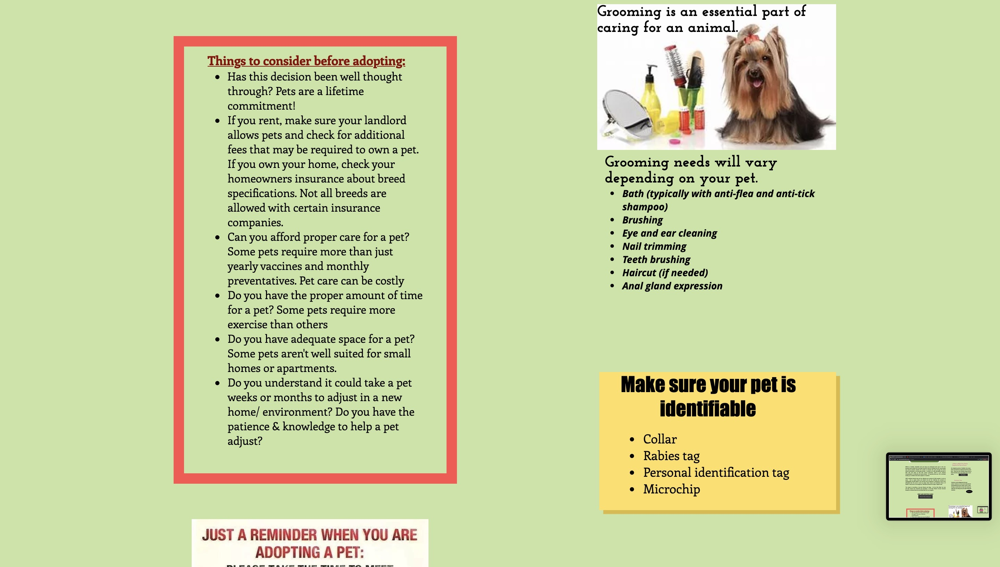
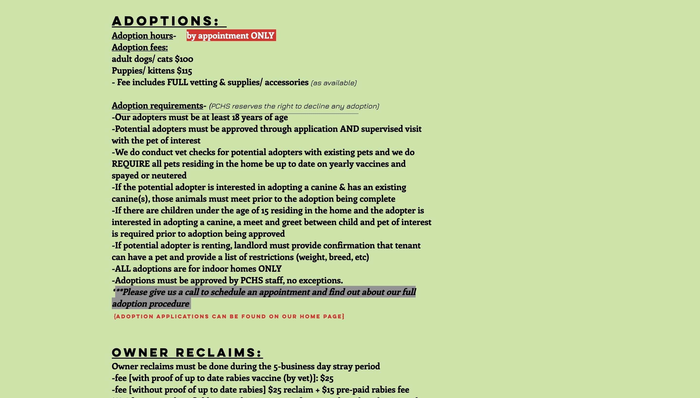
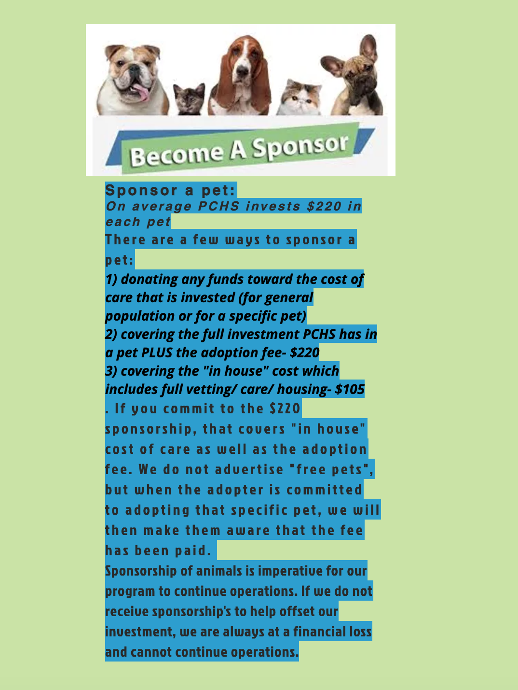
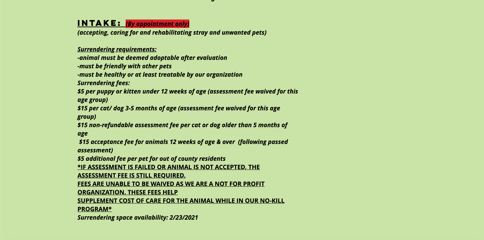
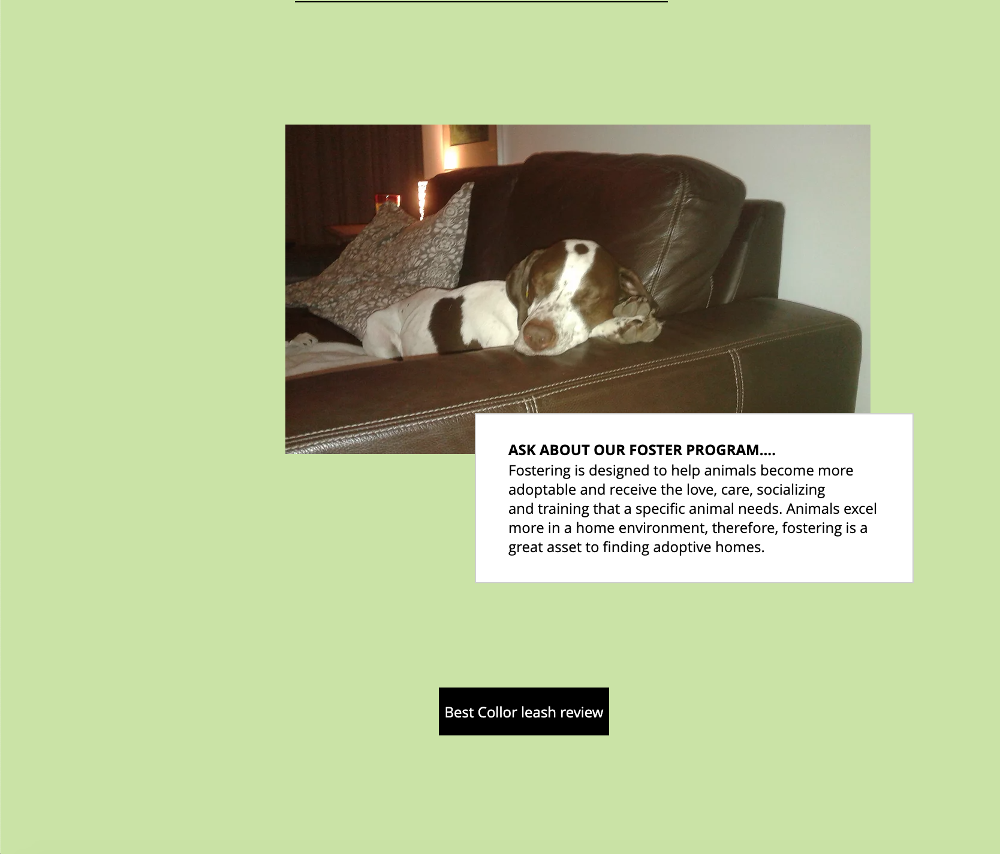
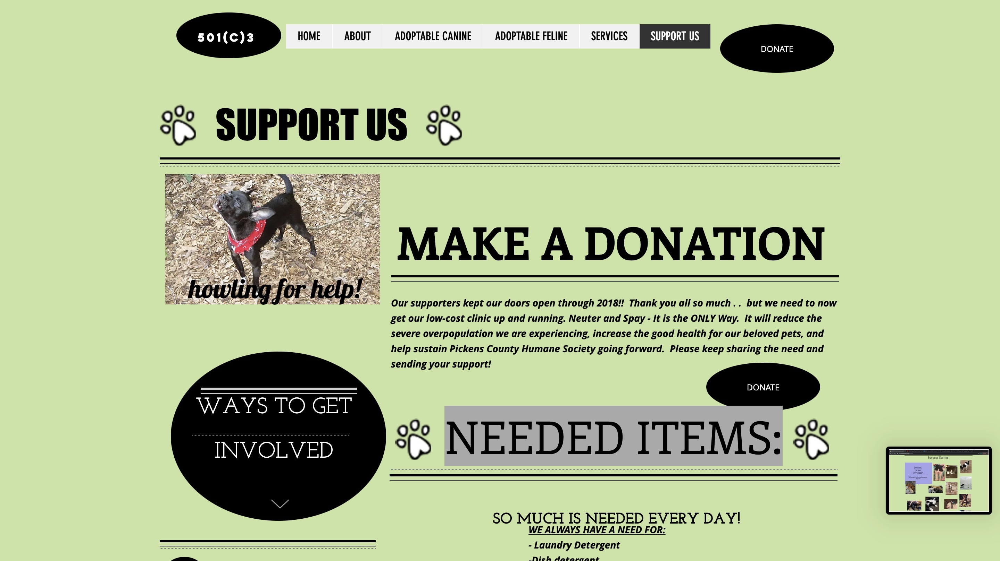

Adoptions
Sponsoring a pet, success stories, and application for adoptions.
The Pickens Humane Socity is a nonprofit organization that houses unwanted animals so they can later be adopted into loving homes. On their website, they have links to the application for adoption that are also available when visiting the center. They include information on the website of how to adopt and what the adoption requirements are. Pets that are adopted in to loving homes are shared on the website and labeled in a gallery called "success stories." It is also possible to sponser a pet from their facility. Sponsoring a pet will cover the cost to take care of their basic needs, any amount can be donated.
  Intake
Rehabilitation for unwanted animals and the fostering care program.
The facility accepts intake of unwanted pets. Owners who no longer want their pets can take them to the facility where they are then cared for and readopted by loving families. This decreases the amount of drop offs that can traumatize them and kill animals that were once pets. There are rules in place for surrendering unwanted pets and small fees that help the cost of care since the facility is a no-kill program. Appointments can be made to surrender unwanted animals.
 Donations
Donations help aid animals for rehabilitation purposes and to aid the temporary home for unwanted pets, which is the humane society itself. Donations help aid the animals for their basic needs which can be for food, paying for medical needs, supplies, etc. Donations also help the facility stay open so they can continue to help animals find their forever homes. They have multiple links to their paypal on different pages of their website.
Advertisement
They have advertisement links at the bottom of their about page such as Zumper, Bissell, Lost Pet USA, and Amazon smile. Having these adverstisements gain sponors forom larger corporations and even aid those who have already adopted animals to recieve the company's products.
They have a small link to the best collar leash review, this would work well along with their other advertisements relating to caring for animals.